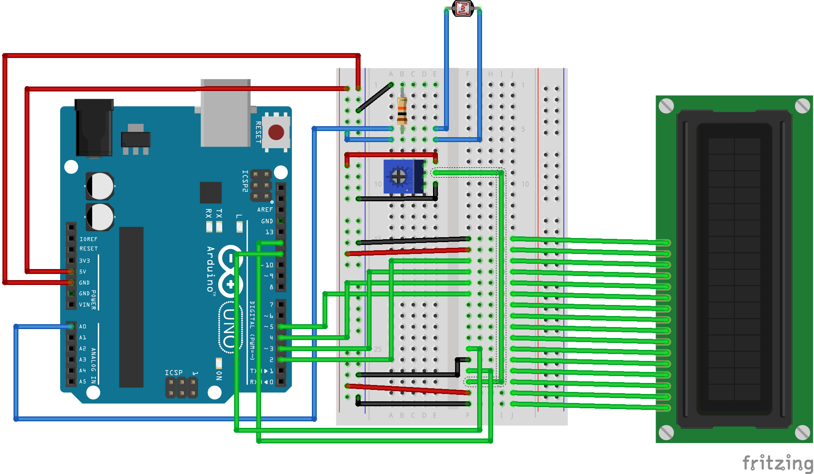

---
13 // Apr // 2023
3 min
Pi has always been 3.14159 to me and to everyone else really, it's only nerds who'd want to know pi up to its 100th or 1000th digit while its your supernerds who'd be searching for pi up to the millionth digit and well, I'm a supernerd (when I want to).
So I was bored one summers day and way too done with the monotony of math and physics revision and opened up YouTube and the first video that piqued my interest was Stand-Up Math's legendary video of finding Among Us in Pi. This Einsteinian ingenuity of a video warrants its own place in the annals of history for finding the meaning of life, death and everything in between but also raised a question in my head: how many Amongii are there in pi?
There are 4 amongii in the first million digits of pi, with the crewmate facing both to the left and the right. It took around 21 milliseconds to calculate and it really didn't take that long.
The code consisted of a function converting the first million digits of pi (removing the "3."") into binary then writing the binary output to a text file. Another function read from the file to search for the string "0111110011110101" or "1010111100111110". This was quite easy but it led me to a much cooler discovery.
Chudnovsky's Algorithm
Chudnovsky's Algorithm was formulated by the Chudnovsky brothers in 1988 based on Ramanujan's pi formulae and goddamn is it interesting. I'm no mathematician but I'll attempt to explain it the best I can.
So, using a generalized hypergeometric function:

The Chudnovsky algorithm uses the 9th Heegner number ($-163$) which is an integer which is divisible by no square number other than 1 and is part of a finite field of imaginary numbers as well as the $j$-function which is a function of a complex variable on the imaginary, positive-only plane (also known as the upper-half plane) of complex numbers to result in:

Photoresistor + Female-to-Male cables
This is the Chudnovsky's algorithm which probably works on a graphing calculator or on pen and paper but it needs some work to be applied on Rust. More on this later.
My Attempt
One glaring issue was the concession I made with the average reading. While this probably could've been easily fixed by writing each value to an array of 10, time constraints (and severe procrastination) hampered it. It probably could've been added in 10 mins with an extra 10 minutes just for testing.
Lightgates are also usually upright but this one's upside down. Lab-grade lightgates use invisible lasers to calculate when and how fast an object breaks or shortens a laser's length so an analog sensor is caveman technology compared to a lab-grade lightgate.
Another problem is how the timer was counted. If I were creating this in a non-Arduino environment, my first instinct would've been using difference in Unix time but I found as I found a solution in the Timer module, which is way easier than Unix time difference. Timer isn't super efficient though, with a few tests showing different values for the same delay time but I guess 5 decimal places don't really matter.
The board on display (with a working LED + Photoresistor)
Source Files
Github Page---
By nail_